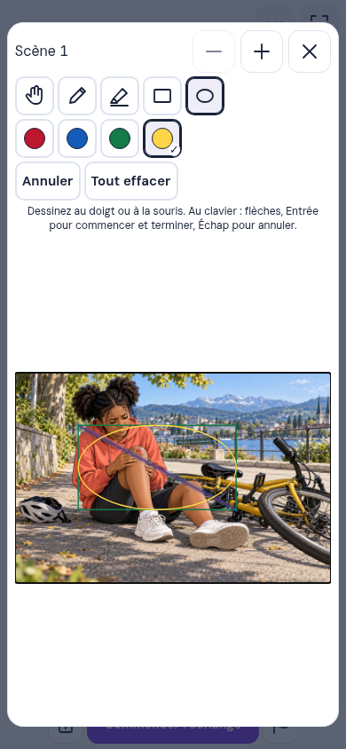
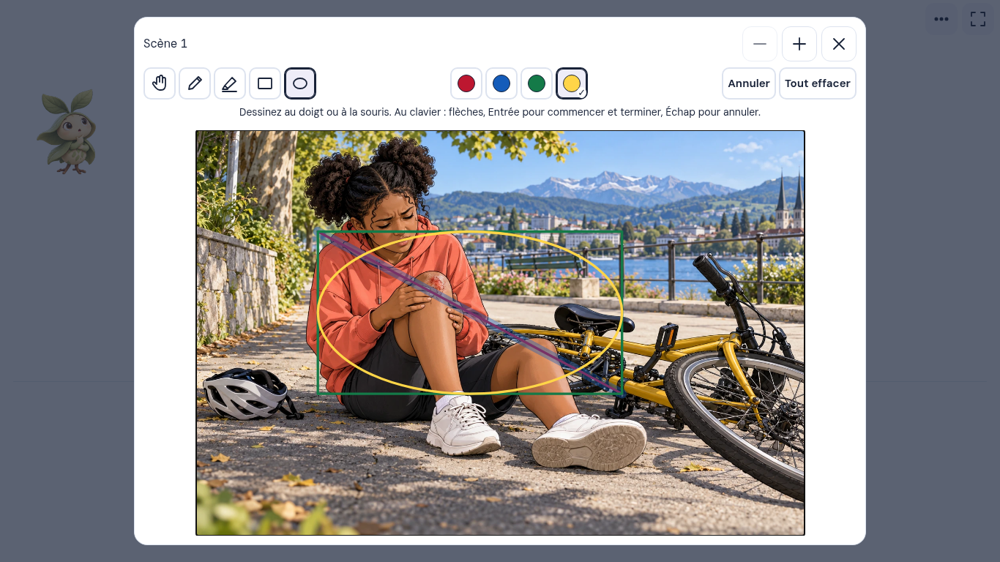
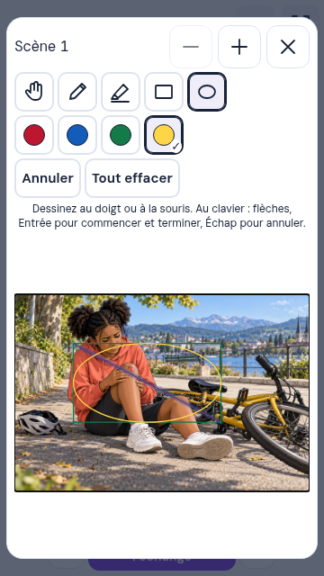

Banque PO existante, sans modification des fichiers images. Stylo, surligneur, cadre et ovale, utilisables au doigt, à la souris et au clavier. Les tracés suivent leurs images après déplacement, zoom et reprise.



Les essais natifs vérifient aussi le verrou, l’annulation d’un geste tactile, la conservation après rechargement et la suspension des minuteurs Solo.